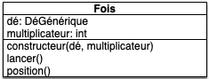

sujet Test 4 : composition agrégation héritage
- François Brucker
Vous devez rendre un dossier contenant les fichiers de ce test. Il contiendra :
- le fichier
dés.pycontenant les classes que l'on vous demande de créer - le fichier
main.pycontenant le programme principal.
- Faites les questions dans l'ordre
- on ne vous demande pas de tests dans ce test
Le but de ce test est de pouvoir réaliser des combinaisons de dés utiles en jeu de rôle. On veut pouvoir par exemple utiliser des objets permettant de représenter :
- d6 + d20 (somme d'un jet d'un dé à 6 faces et d'un jet d'un dé à 20 faces)
- 3 * d6 (3 fois la valeur d'un jet d'un dé à 6 faces)
- d6 + 4
- ou des combinaisons de tout ça, comme : 3 * (d6 + 4) + d20
Le sujet est (trop) long, terminez le un soir, au calme, car il est paradigmatique d'une modélisation objet permettant d'utiliser informatiquement des objets (presque) comme on le ferait dans la vraie vie.
Question 1
from random import randrange
class DéGénérique:
def __init__(self, max, position=1):
self._max = max
self._position = position
def position(self):
return self._position
def lancer(self):
self._position = randrange(1, self._max + 1)
Question 1.1
Implémentez les classes D6 et D20 pour qu'elles respectent le modèle UML ci-après :

On veut également que :
- les positions possibles d'un objet dé de type
D6soient entre 1 et 6 - les positions possibles d'un objet dé de type
D20soient entre 1 et 20
Question 1.2
Dans le programme principal :
- créez un d6 et un d20
- affichez les positions des dés créés
- lancez les
- affichez les positions des dés créés
Question 2
On veut pouvoir composer deux dés de façon à pouvoir :
- les lancer simultanément
- obtenir la somme de leurs valeurs respectives
Ceci doit être possible en utilisant une classe dont le schéma UML est :

Question 2.1
Créez la classe Somme.
Question 2.2
Dans le programme principal :
Ajoutez :
- créez une
Sommeavec les deux dés que vous avez créés à la question précédente - affichez la position de la somme
- lancez la
- affichez la position de la somme
Question 3
On veut lier DéGénérique et Somme.
Question 3.1
Créez la méthode spéciale DéGénérique.__add__(other) qui permettra d'écrire c = a + b avec :
- un objet
ade type dé - l'objet
cde typeSommecomposée des objetsaetb.
Question 3.2
Modifiez le programme principal pour que la somme soit créée à partir de l'objet du type D6
Question 4
De plus en plus fort : des sommes de sommes sans seum.
Question 4.1
Modifiez La classe Somme en y ajoutant la méthode spéciale Somme.__add__(other) afin qu'il soit possible d'écrire le code suivant :
un_d6 = D6()
un_autre_d6 = D6()
un_d20 = D20()
d6_plus_d6_plus_d20 = (un_d6 + un_d20) + un_d6
Notez que le code un_d6 + un_d20 + un_d6 est équivalent à (un_d6 + un_d20) + un_d6
Question 4.2
Dans le programme principal :
Ajoutez :
- créez l'objet
d6_plus_d6_plus_d20de la question précédente - affichez la position de
d6_plus_d6_plus_d20 - lancez le
- affichez la position de
d6_plus_d6_plus_d20
Question 5
Un marteau enchanté fait : d6 + 4 dégâts. Il est pour l'instant impossible de gérer ceci avec nos objets, car un entier n'a pas de méthode position() ni lancer().
Une solution simple pour résoudre ce problème est de transformer notre entier en un dé constant.
Question 5.1
Créez une classe Cte qui :
- hérite de
DéGénérique - se construit en donnant explicitement une position
- la méthode
Cte.lancer()ne modifie pas sa position (lorsque vous redéfinissez une méthode dans une classe fille, vous n'êtes pas obligé de rappeler la méthode de la classe mère)
Il suffit maintenant d'intercepter les entiers qui peuvent arriver dans nos expressions et de les transformer en constante.
Dans les méthodes DéGénérique.__add__(other) et Somme.__add__(other) transformez le paramètre other s'il est entier en un objet de type Cte() (vous pourrez utiliser isinstance(other, int) pour savoir si other est un entier)
Question 5.2
Testons tout ça dans le programme principal :
Créez un objet simulant les dégâts d'un marteau magique puis faites un jet de dommage et affichez sa valeur.
Question 6
Gestion de la multiplication. On a envie de pouvoir multiplier des positions de dés (ou de sommes) par un entier. En s'inspirant de Somme on forme le schéma UML d'une classe Fois qui permettrait de faire cela :

SI on veut utiliser une méthode spéciale pour écrire cette composition, on aimerait le faire en écrivant des choses comme 3 * un_dé6.
La méthode spéciale à utiliser ne peut pas être DéGénérique.__mul__(other) ca écrire 3 * un_dé6 se traduit en python en (3).__mul__(Dé()) qui produira une erreur (l'erreur est TypeError) car la classe int n'est pas codée pour accepter un objet de type Dé en paramètre.
Pour ce genre de cas où a.__mul__(b) produit une erreur mais où b.__mul__(b) fonctionnerait, on peut utiliser __rmul__.
En effet, pour calculer a * b python fait plusieurs essais :
- il essaye
A.__mul__(B) - si l'expression précédente rend une erreur de type
TypeErroralors python tenteB.__rmul__(A)
Question 6.1
- créez cette classe que vous nommerez
Fois - ajoutez la méthode
DéGénérique.__rmul__(entier)permettant de rendre des objets de la classeFoispour un dé - forgez la
Somme.__rmul__(entier)permettant de rendre des objet de la classeFoisà partir d'un objetSomme.fois(entier) - ajoutez la méthode
Fois.__rmul__()pour finir de lierDéGénérique,SommeetFoisen un unique ensemble de classes permettant de faire la même chose.
Question 6.2
Dans le programme principal :
- utilisez le
D6et leD20créés à la question 1.2 pour créer l'objet : 3 * (d6 + d20) - affichez sa position
- lancez le
- affichez sa position